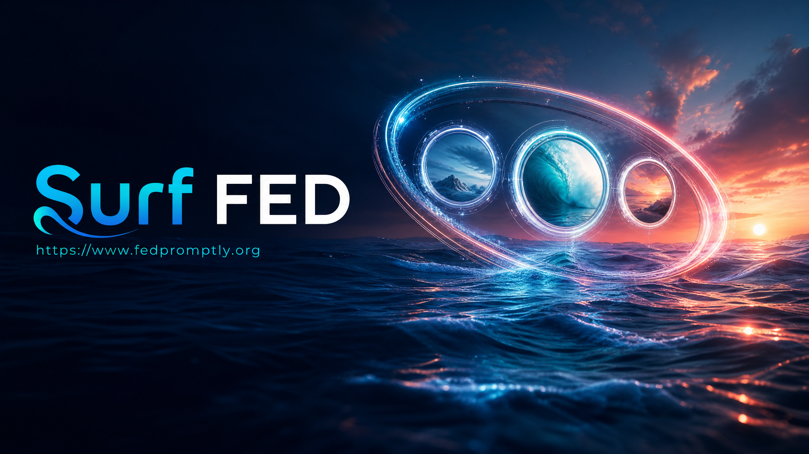
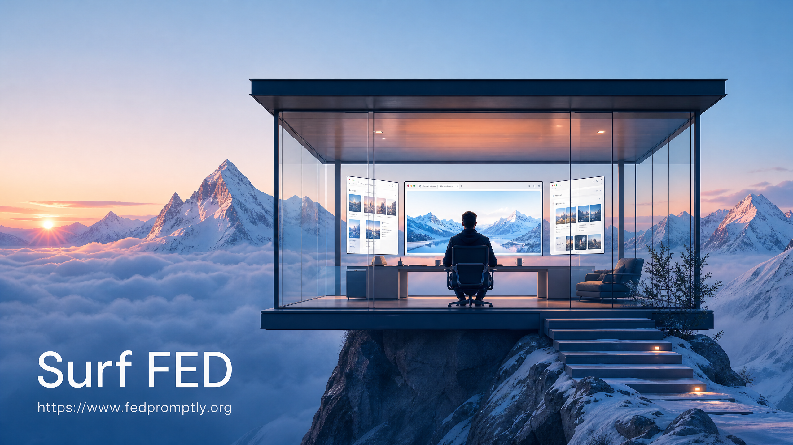
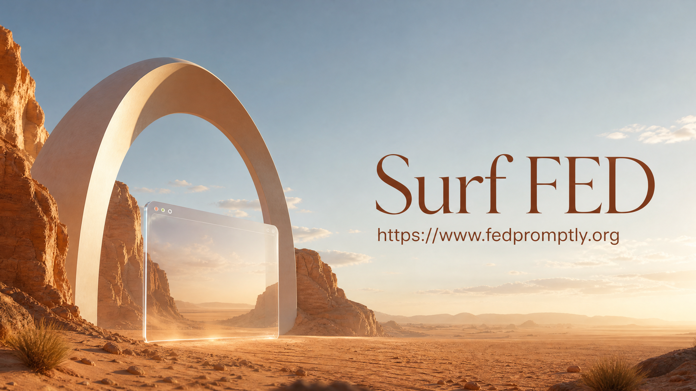
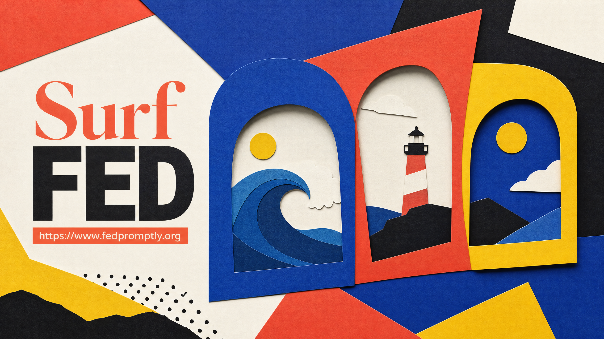

Split your thinking
Move between one, two, or three panes without losing the tabs, context, or momentum you built inside them.
POWER-USER BROWSER WORKSPACE / 01
Surf FED is a browser workspace built for people who need more than a row of tabs. Split your thinking, shape your focus, and keep every pane under your control.

THE CONTROL LAYER / 02
Every decision in Surf FED starts with a simple question: what would make the next piece of work feel clearer?
Move between one, two, or three panes without losing the tabs, context, or momentum you built inside them.
New tabs start quiet. Whitelist the places you trust and keep autoplay from deciding what gets your attention.
Built-in capabilities and desktop extension support give your favorite workflows a home without the browser sprawl.
Surf FED and FED-EDU connect the workspace to learning, community, and the next useful thing you can build.
THE WORKSPACE / 03
Not a dashboard. Not a novelty split view. A real workspace that keeps your tabs alive while you change the shape of your day.
Research on the left. Your working document in the middle. Reference or communication on the right. Drag the dividers, park a tab, and come back exactly where you left off.
Keep context close.
Keep control closer.
FED-EDU is the learning and community layer attached to the workspace: courses, blueprints, a living dictionary, and a place to share what you are making.
Short courses that turn curiosity into a repeatable practice.
02 / BLUEPRINTSProjects with enough structure to get you moving.
03 / COMMUNITYFind people who care about the same questions you do.
04 / DICTIONARYMake unfamiliar ideas easier to return to and use.
A VISUAL LANGUAGE / 04
Surf FED is an evolving system, not a finished box. The visual language keeps the product technical, warm, and a little strange.



NON-NEGOTIABLES / 05
The original project is held to concrete release gates. That discipline carries through to the product story.
Layouts should change around your work, not make your work restart. Tabs, panes, and assignments persist.
Global mute-by-default behavior is not decoration. It is a boundary between your work and everything trying to interrupt it.
Desktop extensions and mobile capabilities are described honestly, with platform differences made visible instead of hidden.
READY WHEN YOU ARE
Explore the repository, follow the build, and help shape a browser that leaves more room for the work that matters.